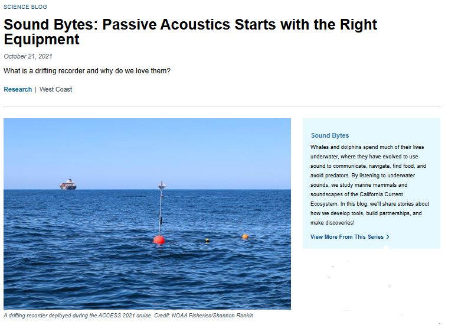
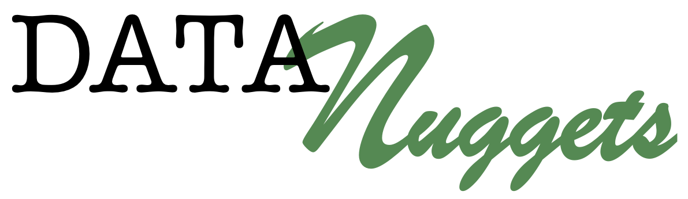
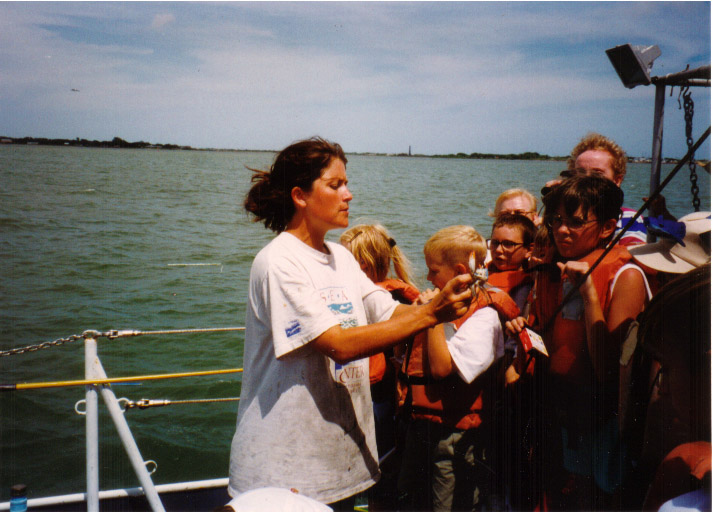

Science Education
Sound Bytes Blog

In an effort to share our exciting research with the public, I had our lab develop a blog, “Sound Bytes”. This served not only as an opportunity to share the science conducted by our research lab, but it also provided our researchers, students, interns, and collaborators with a platform to share their role in our research. The blog was well received by the public, government policy managers, NOAA leadership, and fellow scientists. I wrote one article describing a partnership with local fisherman ‘Fresh Catch- Lessons from A Fisherman’.
Data Nugget

Collaborated with Melissa Kjelvik from Data Nuggets to develop a K-12 classroom activity based on our Adrift in the California Current research. Data Nuggets are activities that bring real scientific data into the classroom. The project, ‘Eavesdropping on the Ocean’ is free and publicly accessible to teachers via their website.
Phenomena Curriculum
In 2020 we collaborated with San Diego Unified School District to host a remote workshop with K-12 teachers to develop curriculum that met NGSS standards and followed the Phenomena approach. Through this effort the teachers developed three levels of curricula: Elementary: Dolphins have needs Middle school: You can recognize different species by the sounds that they make High school: Ocean noise pollution impacts marine mammals
Dolphin Speak
Dolphin Speak is a series of videos and associated educational materials on the topic of how scientists use sound to study dolphins. As a part of this effort, I collaborated with Dr. Julie Oswald at University of St. Andrews to create two ‘Dolphin Speak’ videos related to my research using sound to study dolphins. These video interviews were led by kids, for kids:
Previous Science Education Experiences

Prior to my work at NOAA Fisheries, I engaged in a wide range of science education jobs, including:
Summer Upward Bound Biology Instructor, University of California, San Diego, CA
Marine Biology Instructor: Communities & Youth Programs, Texas A & M University, Galveston, TX
Teaching Assistant, Animal Ecology and Ichthyology Labs, Texas A & M University, College Station, TX
Pre-College Instructor, Marine Science Consortium, Wallops Island, VA
Touch Tank Interpreter, The Sea Center, Santa Barbara, CA